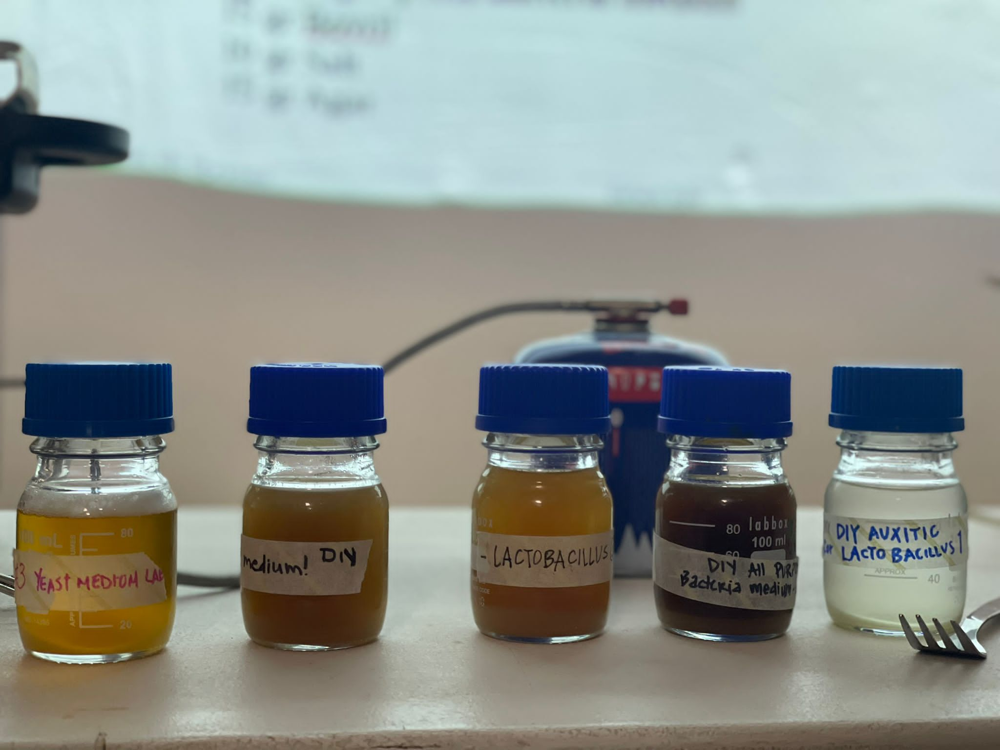
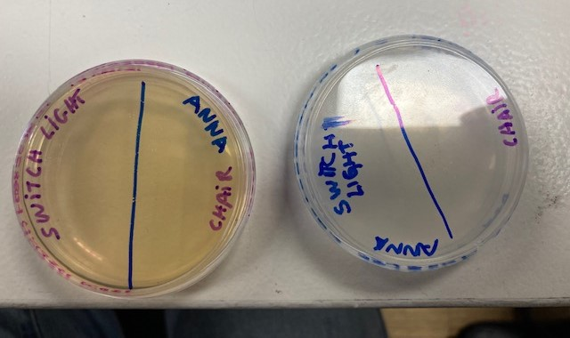
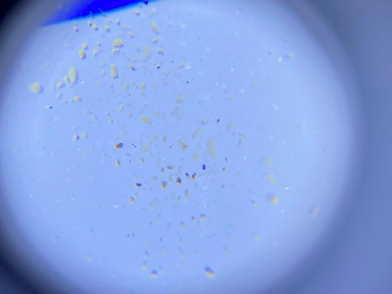
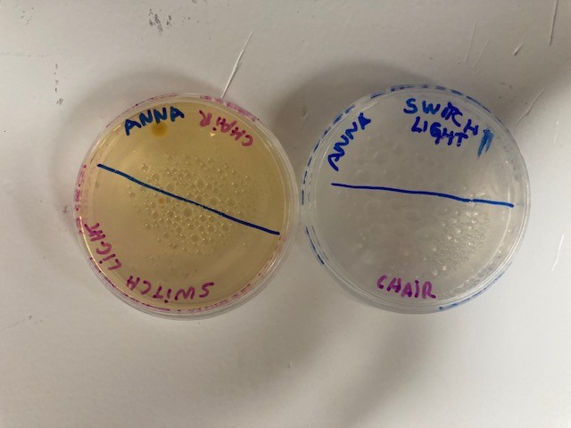
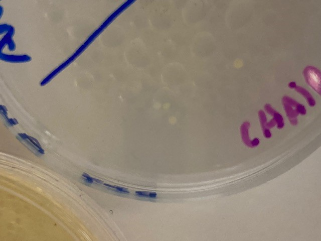
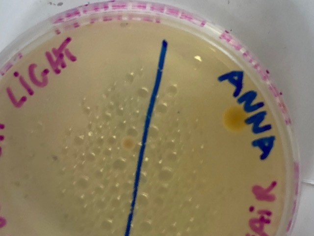

Bio Zero
The biology is the best area of work where we can notice the presence of the holistic system on earth. As we go from the chemistry of the elements to a complex biological system, arriving to the cultural evolution. This term is use for Ken Wilber on
"A Brief History of Everything"
After make some experiments, correlated with the bacteria (lactobacillus and yeast) and discovered the spirulina. It makes me realize how many beings exist around us and how we depend on them and how much we ignore them in our lives.
Lactobacillus and Yeast
First, we prepare the templates to make grow the possible bacteria in the different scenarios that we choose. I select a chair and a switch lighter in both of them.

Hypothesis
My hypothesis about the Lactobacillus, in one hand we have the switch lighter that we can find some substance correlate with lactose, because people usually touch their own food, and it usually contains lactose.
For the other hand, about the chair it could be that there are some bacteria, but I do not expect to find a lot of them.
Then about the yeast, I would say that we will have similar results as Lactobacillus, mainly because of the food issues.

Conclusion
After 3 days:
Lactobacillus: It seems to be completely clean, the chair and the switch lighter. But when we attach the microscope to it in the part of the chair, it seems to been wronging small bacteria.
Yeast: Everything is completely clean, even with the microscope.

After 7 days:
Lactobacillus: Three lumps seem to have appeared on the side of the chair. They are very small.
Yeast: There are two grains of bacteria. A larger one in the saddle area and a slightly smaller one in the switch area, but very centred.



Reflexion
The most impressive for me was the way, as the cells transform the energy (ADP to ATP), with that molecular energy (NADH). Produce me some questions about it;
- How much the quantic physics affects the NADH? (Using the philosophy of nanoscience -down to up-).
- Is there a way to use on a profit efficiency of energy of it?